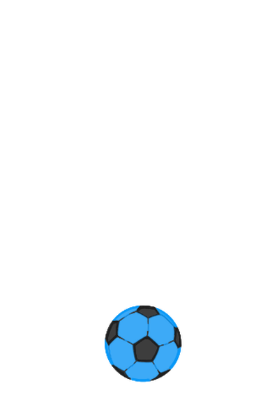
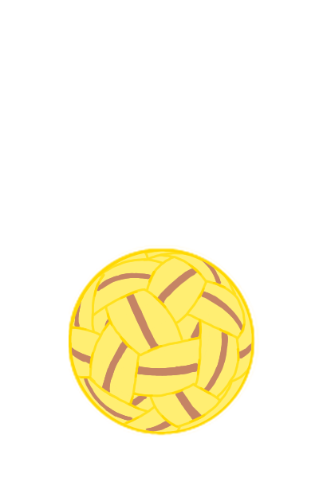
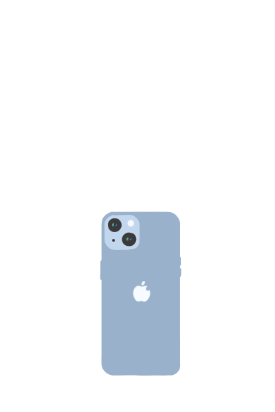
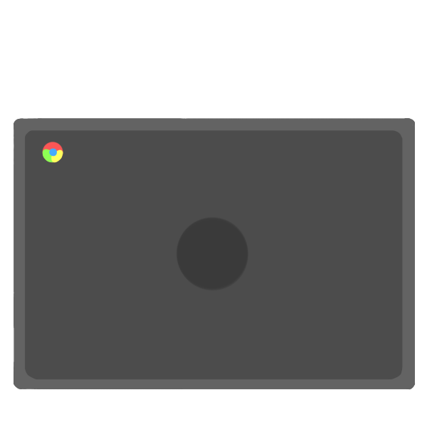
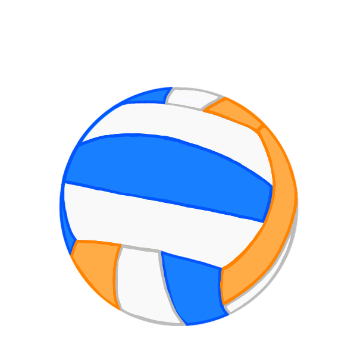
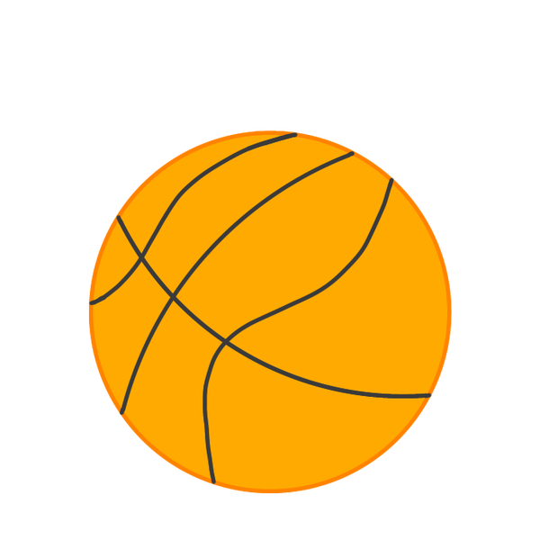
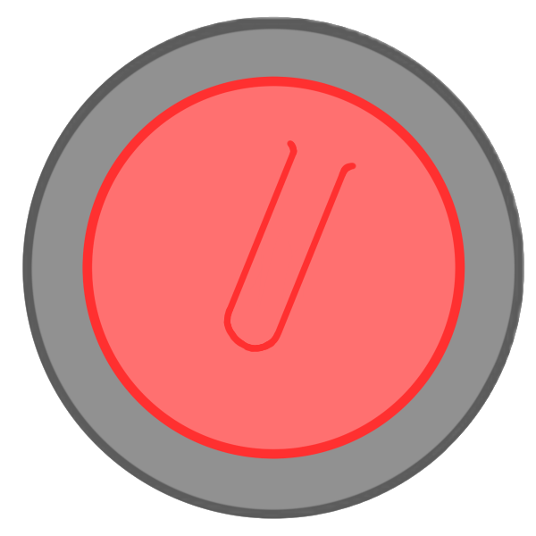

ころくる
home
All
あ/か
さ/た
な/は
ま/や/ら
このサイトについて
卓球
ゴルフ

フットボール
ウィッフルボール
バドミントン
テニス(硬式)
テニス
（軟式、ソフトテニス）
野球
クリケット
ティーボール
ホッケー
野球
ゲートボール
アイスホッケー
ソフトボール
砲丸投
毬(まり)

セパタクロー

iPhone14
約7×15cm
へディス
ハンドボール
フットサル
バレーボール
バレーボール
マルチボール

500mlのペットボトル
約6.5×20.5cm

Chromebook 11.6インチ
約29.5×20.5cm
ドッジボール
(小学生用)
ドッジボール
水球
サッカー

ネットボール

バスケットボール
コーフボール
ビーチバレー
アルティメット
ラグビー
アメリカンフットボール

カーリング
気になるイラストにカーソルを合わせると
その競技名が表示されます
（カーソルがスライドの上にあると動きが止まります）
メニューからその競技を探すとボールの大きさや
その競技のルール(外部リンク)などの詳細を見ることができます